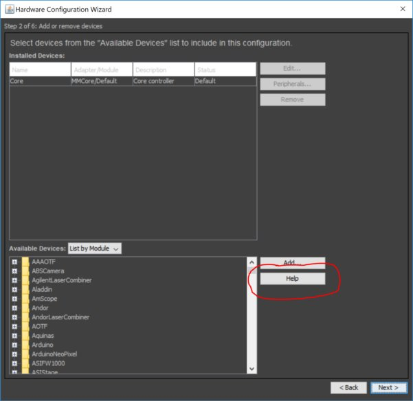

μManager configuration


The Hardware Configuration file is a text file that describes the hardware and hardware settings. Here, we use "virtual" hardware.

The "Help" button links to the selected device's page on the micro-manager website, often providing useful information.
Give the device a name that means something to you and your useres, and set pre-initialization properties (depends on device).
For "Hub" devices you can select here which of its "peripherals" you want to used.

If any of the peripherals has pre-intialization properties, you will asked to set those now.

Congratulations! μManager now knows about your devices.
Assign default roles (and stage directions). You can change the "active" camera/Shutter/Focus stage and autoshutter at any point in time later on.
Some (older) devices will not tell when they are done moving. The "delay" should be set to the longest time it can take for these devices to stop moving.

Give the State Device positions meaningful names. Sometimes you can use the "Read" button to read names from the device itself.
Save and you are done telling μManager which devices are part of your system.
μManager Configuration
Save and you are done telling μManager which devices are part of your system.
More?
User's guide (old, written for 1.4)